Linux漫游——进程
进程
6.1 进程和程序
进程（process）是一个可执行程序（program）的实例。本节将阐述进程定义，并澄清其与程序之间的区别。程序是包含了一系列信息的文件，这些信息描述了如何在运行时创建一个进程，所包括的内容如下所示。
二进制格式标识：**每个程序文件都包含用于描述可执行文件格式的元信息（metainformation）**。内核（kernel）利用此信息来解释文件中的其他信息。历史上，UNIX可执行文件曾有两种广泛使用的格式，分别为最初的 a.out（汇编程序输出）和更加复杂的 COFF（通用对象文件格式）。现在，大多数 UNIX 实现（包括 Linux）采用可执行连接格式（ELF），这一文件格式比老版本格式具有更多优点。
- 机器语言指令：对程序算法进行编码。
- 程序入口地址：标识程序开始执行时的起始指令位置。
- 数据：程序文件包含的变量初始值和程序使用的字面常量（literal constant）值（比如字符串）。
- 符号表及重定位表：描述程序中函数和变量的位置及名称。这些表格有多种用途，其中包括调试和运行时的符号解析（动态链接）。
- 共享库和动态链接信息：程序文件所包含的一些字段，列出了程序运行时需要使用的共享库，以及加载共享库的动态链接器的路径名。
- 其他信息：程序文件还包含许多其他信息，用以描述如何创建进程。
可以用一个程序来创建许多进程，或者反过来说，许多进程运行的可以是同一程序。在此将本节开始时给出的进程定义重新改写为，进程是由内核定义的抽象的实体，并为该实体分配用以执行程序的各项系统资源。
从内核角度看，进程由用户内存空间（user-space memory）和一系列内核数据结构组成，其中用户内存空间包含了程序代码及代码所使用的变量，而内核数据结构则用于维护进程状态信息。记录在内核数据结构中的信息包括许多与进程相关的标识号（IDs）、虚拟内存表、打开文件的描述符表、信号传递及处理的有关信息、进程资源使用及限制、当前工作目录和大量的其他信息。
6.2 进程号和父进程号
每个进程都有一个进程号（PID），进程号是一个正数，用以唯一标识系统中的某个进程。对各种系统调用而言，进程号有时可以作为传入参数，有时可以作为返回值。比如，系统调用 kill()（20.5 节）允许调用者向拥有特定进程号的进程发送一个信号。当需要创建一个对某进程而言唯一的标识符时，进程号就会派上用场。常见的例子是将进程号作为与进程相关文件名的一部分。
系统调用 getpid()返回调用进程的进程号。
#include <unistd.h>
pid_t getpid(void); getpid()返回值的数据类型为 pid_t，该类型是由 SUSv3 所规定的整数类型，专用于存储进程号。除了少数系统进程外，比如 init 进程（进程号为 1），程序与运行该程序进程的进程号之间没有固定关系。Linux 内核限制进程号需小于等于 32767。新进程创建时，内核会按顺序将下一个可用的进程号分配给其使用。每当进程号达到 32767 的限制时，内核将重置进程号计数器，以便从小整数开始分配。
一旦进程号达到 32767，会将进程号计数器重置为 300，而不是 1。之所以如此，是因为低数值的进程号为系统进程和守护进程所长期占用，在此范围内搜索尚未使用的进程号只会是浪费时间。在 Linux2.4 版本及更早版本中，进程号的上限 32767，由内核常量 PID_MAX 所定义。在 Linux 2.6 版本中，情况有所改变。尽管进程号的默认上限仍是 32767，但可以通过 Linux系统特有的/proc/sys/kernel/pid_max 文件来进行调整（其值=最大进程号+1）。在 32 位平台中，pid_max 文件的最大值为 32768，但在 64 位平台中，该文件的最大值可以高达到 222（约400 万），系统可能容纳的进程数量会非常庞大。 每个进程都有一个创建自己的父进程。使用系统调用 getppid()可以检索到父进程的进程号。
#include <unistd.h>
pid_t getppid(void); 实际上，每个进程的父进程号属性反映了系统上所有进程间的树状关系。每个进程的父进程又有自己的父进程，以此类推，回溯到 1 号进程—init 进程，即所有进程的始祖。使用pstree(1)命令可以查看到这一“家族树”（family tree）。
如果子进程的父进程终止，则子进程就会变成“孤儿”，init 进程随即将收养该进程，子进程后续对 getppid()的调用将返回进程号 1（参照 26.2 节）。通过查看由 Linux 系统所特有的/proc/PID/status 文件所提供的 PPid 字段，可以获知每个进程的父进程。
6.3 进程内存布局
每个进程所分配的内存由很多部分组成，通常称之为“段（segment）”。如下所示。y 文本段包含了进程运行的程序机器语言指令。文本段具有只读属性，以防止进程通过错误指针意外修改自身指令。因为多个进程可同时运行同一程序，所以又将文本段设为可共享，这样，一份程序代码的拷贝可以映射到所有这些进程的虚拟地址空间中。
- 初始化数据段包含显式初始化的全局变量和静态变量。当程序加载到内存时，从可执行文件中读取这些变量的值。
- 未初始化数据段包含了未进行显式初始化的全局变量和静态变量。程序启动之前，系统将本段内所有内存初始化为 0。出于历史原因，此段常被称为 BSS 段，这源于老版本的汇编语言助记符“block started by symbol”。将经过初始化的全局变量和静态变量与未经初始化的全局变量和静态变量分开存放，其主要原因在于程序在磁盘上存储时，没有必要为未经初始化的变量分配存储空间。相反，可执行文件只需记录未初始化数据段的位置及所需大小，直到运行时再由程序加载器来分配这一空间。
- 栈（stack）是一个动态增长和收缩的段，由栈帧（stack frames）组成。系统会为每个当前调用的函数分配一个栈帧。栈帧中存储了函数的局部变量（所谓自动变量）、实参和返回值。6.5 节将深入讨论栈帧。
- 堆（heap）是可在运行时（为变量）动态进行内存分配的一块区域。堆顶端称作program break。
对于初始化和未初始化的数据段而言，不太常用、但表述更清晰的称谓分别是用户初始化数据段（user-initialized data segment）和零初始化数据段（zero-initialized data segment）。size(1)命令可显示二进制可执行文件的文本段、初始化数据段、非初始化数据段（bss）的段大小。
正文中使用的术语“段（segment）”不应与一些硬件体系架构，比如 x86-32 中使用的硬件分段（segmentation）相混淆。相反，本文中的段是对 UNIX 系统中进程虚拟内存的逻辑划分。有时，会使用术语“区（section）”来替代段，因为在当下风行的可执行文件格式（ELF）规范中，采用的术语与“区”更趋一致。本书会在多处涉及这种情况：库函数返回的指针指向静态分配的内存。这意味着，该内存既可在初始化数据段中分配，也可在非初始化数据段中分配。（某些情况下，库函数转而会在堆上对内存做一次性动态分配，然而，这一实现细节与这里所要表达的意思无关。）库函数有时会通过静态分配的内存来返回信息，了解这一情况至关重要，因为这片内存的存在独立于函数调用，后续对同一函数的调用可能会将其覆盖（有时，后续对相关函数的调用也有相同的效应）。使用静态分配的内存会使函数不可重入（nonreentrant）。21.1.2 节和31.1 节将深入讨论重入（reentrancy）问题。 程序清单 6-1 展示了不同类型的 C 语言变量，并以注释说明每种变量分属于哪个段。这些说明正确的前提是假定使用了非优化的编译器，且在应用程序二进制接口（ABI）中，是通过栈来传递所有参数的。实际上，优化编译器会将频繁使用的变量分配于寄存器中，或者索性将变量彻底剔除1。此外，一些 ABI 需要通过寄存器，而不是栈，来传递函数实参和结果。尽管如此，本例只是意在展示 C 语言变量和进程各段间的映射关系。
程序清单 6-1：程序变量在进程内存各段中的位置
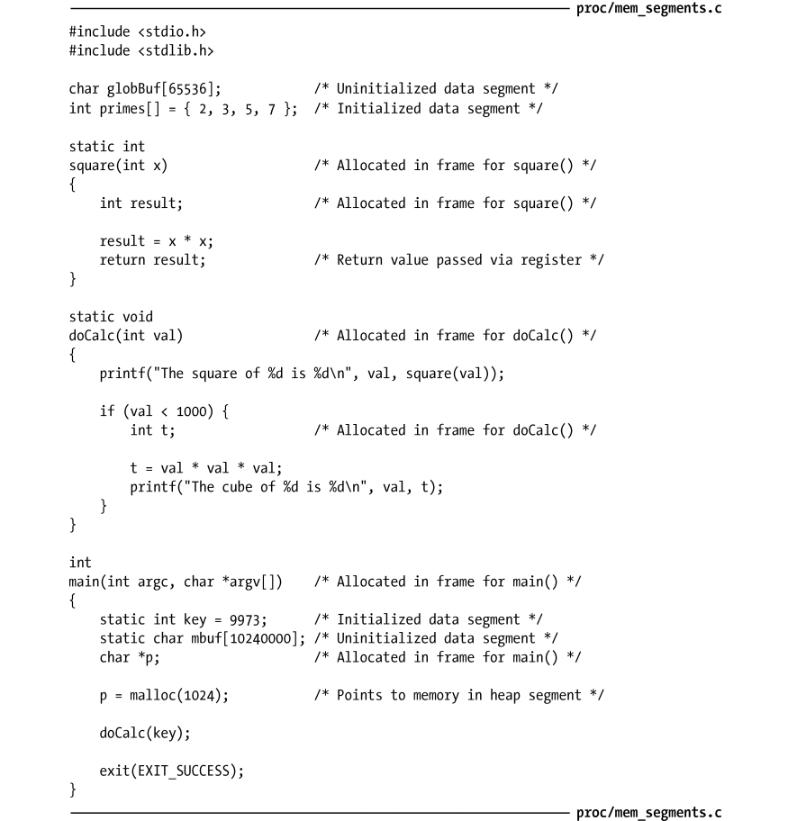
应用程序二进制接口（ABI）是一套规则，规定了二进制可执行文件在运行时应如何与某些服务（诸如内核或函数库所提供的服务）交换信息。ABI 特别规定了使用哪些寄存器 1 译者注：例如，以寄存器取代变量。和栈地址来交换信息以及所交换值的含义，一旦针对某个特定 ABI 进行了编译，其二进制可执行文件应能在 ABI 相同的任何系统上运行。与之相反，标准化的 API（如 SUSv3）仅能通过编译源代码来保证应用程序的可移植性。 虽然 SUSv3 未作规定，但在大多数 UNIX 实现（包括 Linux）中 C 语言编程环境提供了 3个全局符号（symbol）：etext、edata 和 end，可在程序内使用这些符号以获取相应程序文本段、初始化数据段和非初始化数据段结尾处下一字节的地址。使用这些符号，必须显式声明如下：
图 6-1 展示了各种内存段在 x86-32 体系结构中的布局，该图的顶部标记为 argv、environ的空间用来存储程序命令行实参（通过 C 语言中 main()函数的 argv 参数获得）和进程环境列表（稍后讨论），图中十六进制的地址会因内核配置和程序链接选项差异而有所不同。图中标灰的区域表示这些范围在进程虚拟地址空间中不可用，也就是说，没有为这些区域创建页表（page table）（参考以下关于虚拟内存管理的讨论）。
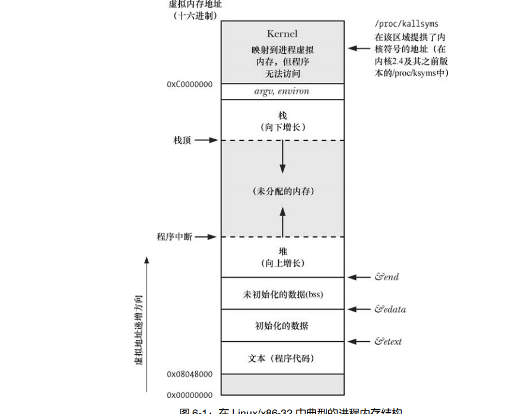
48.5 节将更为详细地重新讨论进程内存布局的课题，还将论及共享内存和共享库在进程虚拟内存中的放置位置。
6.4 虚拟内存管理
上述关于进程内存布局的讨论忽略了一个事实：这一布局存在于虚拟内存中。因为对虚拟内存的理解将有助于后续对诸如 fork()系统调用、共享内存和映射文件之类主题的阐述，所以这里将探讨一些有关虚拟内存的详细内容。
Linux，像多数现代内核一样，采用了虚拟内存管理技术。该技术利用了大多数程序的一个典型特征，即访问局部性（locality of reference），以求高效使用 CPU 和 RAM（物理内存）资源。大多数程序都展现了两种类型的局部性。
- 空间局部性（Spatial locality）：是指程序倾向于访问在最近访问过的内存地址附近的内存（由于指令是顺序执行的，且有时会按顺序处理数据结构）。
- 时间局部性（Temporal locality）：是指程序倾向于在不久的将来再次访问最近刚访问过的内存地址（由于循环）。
正是由于访问局部性特征，使得程序即便仅有部分地址空间存在于 RAM 中，依然可能得以执行。虚拟内存的规划之一是将每个程序使用的内存切割成小型的、固定大小的“页”（page）单元。相应地，将 RAM 划分成一系列与虚存页尺寸相同的页帧。任一时刻，每个程序仅有部分页需要驻留在物理内存页帧中。这些页构成了所谓驻留集（resident set）。程序未使用的页拷贝保存在交换区（swap area）内—这是磁盘空间中的保留区域，作为计算机 RAM 的补充— 仅在需要时才会载入物理内存。若进程欲访问的页面目前并未驻留在物理内存中，将会发生页面错误（page fault），内核即刻挂起进程的执行，同时从磁盘中将该页面载入内存。
在 x86-32 中，页面大小为 4096 个字节。其他一些 Linux 实现使用的页面比 4096 个字节更大。例如，Alpha 使用的页面大小为 8192 个字节，IA-64 使用的页面大小是可变的，默认为 16384 个字节。程序可调用 sysconf(_SC_PAGESIZE)来获取系统虚拟内存的页面大小，具体参见 11.2 节的描述。_ 为支持这一组织方式，内核需要为每个进程维护一张页表（page table）（见图 6-2）。该页表描述了每页在进程虚拟地址空间（virtual address space）中的位置（可为进程所用的所有虚拟内存页面的集合）。页表中的每个条目要么指出一个虚拟页面在 RAM 中的所在位置，要么表明其当前驻留在磁盘上。在进程虚拟地址空间中，并非所有的地址范围都需要页表条目。通常情况下，由于可能存在大段的虚拟地址空间并未投入使用，故而也无必要为其维护相应的页表条目。若进程试图访问的地址并无页表条目与之对应，那么进程将收到一个 SIGSEGV 信号。由于内核能够为进程分配和释放页（和页表条目），所以进程的有效虚拟地址范围在其生命周期中可以发生变化。这可能会发生于如下场景。
- 由于栈向下增长超出之前曾达到的位置。
- 当在堆中分配或释放内存时，通过调用 brk()、sbrk()或 malloc 函数族（第 7 章）来提升 program break 的位置。
- 当调用 shmat()连接 System V 共享内存区时，或者当调用 shmdt()脱离共享内存区时（第48 章）。
- 当调用 mmap()创建内存映射时，或者当调用 munmap()解除内存映射时（第 49 章）。
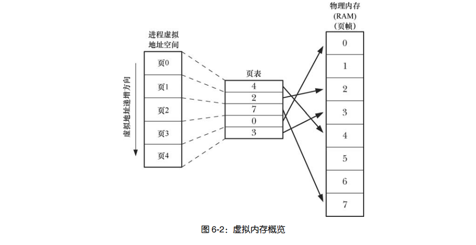
虚拟内存的实现需要硬件中分页内存管理单元（PMMU）的支持。PMMU 把要访问的每个虚拟内存地址转换成相应的物理内存地址，当特定虚拟内存地址所对应的页没有驻留于 RAM 中时，将以页面错误通知内核。 虚拟内存管理使进程的虚拟地址空间与 RAM 物理地址空间隔离开来，这带来许多优点。
- 进程与进程、进程与内核相互隔离，所以一个进程不能读取或修改另一进程或内核的内存。这是因为每个进程的页表条目指向 RAM（或交换区）中截然不同的物理页面集合。
- 适当情况下，两个或者更多进程能够共享内存。这是由于内核可以使不同进程的页表条目指向相同的 RAM 页。内存共享常发生于如下两种场景。 –执行同一程序的多个进程，可共享一份（只读的）程序代码副本。当多个程序执 行相同的程序文件（或加载相同的共享库）时，会隐式地实现这一类型的共享。 –进程可以使用 shmget()和 mmap()系统调用显式地请求与其他进程共享内存区。 这么做是出于进程间通信的目的。
- 便于实现内存保护机制；也就是说，可以对页表条目进行标记，以表示相关页面内容是可读、可写、可执行亦或是这些保护措施的组合。多个进程共享 RAM 页面时，允许每个进程对内存采取不同的保护措施。例如，一个进程可能以只读方式访问某页面，而另一进程则以读写方式访问同一页面。
- 程序员和编译器、链接器之类的工具无需关注程序在 RAM 中的物理布局。
- 因为需要驻留在内存中的仅是程序的一部分，所以程序的加载和运行都很快。而且，一个进程所占用的内存（即虚拟内存大小）能够超出 RAM 容量。
虚拟内存管理的最后一个优点是：由于每个进程使用的 RAM 减少了，RAM 中同时可以容纳的进程数量就增多了。这增大了如下事件的概率：在任一时刻，CPU 都可执行至少一个进程，因而往往也会提高 CPU 的利用率。
6.5 栈和栈帧
函数的调用和返回使栈的增长和收缩呈线性。X86-32 体系架构之上的 Linux（和多数其他 Linux 和 UNIX 实现），栈驻留在内存的高端并向下增长（朝堆的方向）。专用寄存器—栈指针（stack pointer），用于跟踪当前栈顶。每次调用函数时，会在栈上新分配一帧，每当函数返回时，再从栈上将此帧移去。虽然栈向下增长，但仍将栈的增长端称为栈顶，因为抽象地说来，情况本就如此。栈的实际增长方向是个（属于硬件范畴的）实现细节。在 HP PA-RISC 的 Linux 实现中，栈的增长方向就是向上的。就虚拟内存而言，分配栈帧后，栈段的大小将会增长，但在大多数（Linux）实现中，释放这些栈帧后，栈的大小并未减少（在分配新的栈帧时，会对这些内存重新加以利用）。当谈论栈段的增长和收缩时，只是从逻辑视角来看待栈帧在栈中的增减情况。
有时，会用用户栈（user stack）来表示此处所讨论的栈，以便与内核栈区分开来。内核栈是每个进程保留在内核内存中的内存区域，在执行系统调用的过程中供（内核）内部函数调用使用。（由于用户栈驻留在不受保护的用户内存中，所以内核无法利用用户栈来达成这一目的。）每个（用户）栈帧包括如下信息。
- 函数实参和局部变量：由于这些变量都是在调用函数时自动创建的，因此在 C 语言中称其为自动变量。函数返回时将自动销毁这些变量（因为栈帧会被释放），这也是自动变量与静态（以及全局）变量主要的语义区别：后者与函数执行无关，且长期存在。
- （函数）调用的链接信息：每个函数都会用到一些 CPU 寄存器，比如程序计数器，其指向下一条将要执行的机器语言指令。每当一函数调用另一函数时，会在被调用函数的栈帧中保存这些寄存器的副本，以便函数返回时能为函数调用者将寄存器恢复原状。
因为函数能够嵌套调用，所以栈中可能有多个栈帧。（若一函数递归调用自身，则该函数在栈中将有多个栈帧。）参考程序清单 6-1，在 square()函数执行期间，栈中包含的帧如图 6-3 所示。
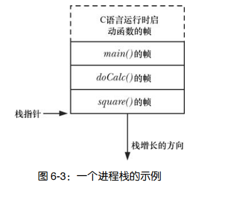
6.6 命令行参数（argc, argv）
每个 C 语言程序都必须有一个称为 main()的函数，作为程序启动的起点。当执行程序时，命令行参数（command-line argument）（由 shell 逐一解析）通过两个入参提供给 main()函数。第一个参数 int argc，表示命令行参数的个数。第二个参数 char *argv[]，是一个指向命令行参数的指针数组，每一参数又都是以空字符（null）1结尾的字符串。第一个字符串，亦即 argv[0] 指向的，（通常）是该程序的名称。argv 中的指针列表以 NULL 指针结尾（即 argv[argc]为 NULL）。argv[0]包含了调用程序的名称，可以利用这一特性玩个实用的小技巧。首先为同一程序创建多个链接（即名称不同），然后让该程序查看 argv[0]，并根据调用程序的名称来执行不同任务。gzip(1)、gunzip(1)和 zcat(1)命令是该技术应用的一个例子，这些命令链接的都是同一可执行文件。（使用该技术，必须小心处理如下情况：用户通过链接调用程序，但链接名又在该程序的意料之外。）图 6-4 展示了执行程序清单 6-2 中程序所传入参 argc 和 argv 的数据结构。该图使用 C 语言符号“\0”来表示每个字符串末尾的终止空字节。程序清单 6-2 中的程序回显了其命令行参数，逐一按行输出，前面还冠以要显示的 argv成员名称。
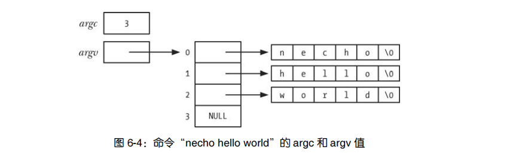
程序清单 6-2：回显命令行参数
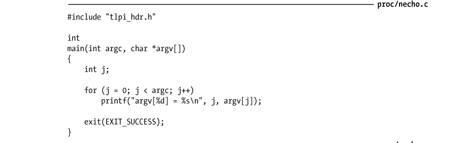
因为 argv 列表以 NULL 值终止，所以可以将程序清单 6-2 中的程序主体改写如下，且每行只输出一个命令行实参：
argc/argv 参数机制的局限之一在于这些变量仅对 main()函数可用。在保证可移植性的同时，为使这些命令行参数能为其他函数所用，必须把 argv 以参数形式传递给这些函数，或是设置一个指向 argv 的全局变量。要想从程序内任一位置访问这些信息的部分或者全部内容，还有两个方法，但是会破坏程序的可移植性。
- 通过 linux 系统专有的/proc/PID/cmdline 文件可以读取任一进程的命令行参数，每个参数都以空（null）字节终止。（程序可以通过/proc/self/cmdline 文件访问自己的命令行参数。）
- GNU C 语言库提供有两个全局变量，可在程序内任一位置使用以获取调用该程序时的程序名称（即命令行的第一个参数）。第一个全局变量 program_invocation_ name，提供了用于调用该程序的完整路径名。第二个全局变量 program_invocation_ short_name，提供了不含目录的程序名称，即路径名的基本名称（basename）部分，定义_GNU_SOURCE宏后即可从
中获得对这两个全局变量的声明。
正如图 6-1 所示，argv 和 environ 数组，以及这些参数最初指向的字符串，都驻留在进程栈之上的一个单一、连续的内存区域。（下一节将描述 environ 参数，该参数用于存储程序的环境列表。）此区域可存储的字节数有上限要求，SUSv3 规定使用 ARG_MAX 常量（定义于
6.7 环境列表
每一个进程都有与其相关的称之为环境列表（environment list）的字符串数组，或简称为环境（environment）。其中每个字符串都以名称=值（name=value）形式定义。因此，环境是“名称-值”的成对集合，可存储任何信息。常将列表中的名称称为环境变量（environment variables）。新进程在创建之时，会继承其父进程的环境副本。这是一种原始的进程间通信方式，却颇为常用。环境（environment）提供了将信息从父进程传递给子进程的方法。由于子进程只有在创建时才能获得其父进程的环境副本，所以这一信息传递是单向的、一次性的。子进程创建后，父、子进程均可更改各自的环境变量，且这些变更对对方而言不再可见。环境变量的常见用途之一是在 shell 中。通过在自身环境中放置变量值，shell 就可确保把这些值传递给其所创建的进程，并以此来执行用户命令。例如，环境变量 SHELL 被设置为 shell程序本身的路径名，如果程序需要执行 shell 时，大多会将此变量视为需要执行的 shell 名称。可以通过设置环境变量来改变一些库函数的行为。正因如此，用户无需修改程序代码或者重新链接相关库，就能控制调用该函数的应用程序行为。getopt()函数就是其中一例（附录 B），可通过设置 POSIXLY_CORRECT 环境变量来改变此函数的行为。大多数 shell 使用 export 命令向环境中添加变量值。
在 bash shell 和 Korn shell 中，可以简写为：
export SHELL=/bin/bash 在 C shell 中，使用的则是 setenv 命令：
上述命令把一个值永久地添加到 shell 环境中，此后这个 shell 创建的所有子进程都将继承此环境。在任一时刻，可以使用 unset 命令撤销一个环境变量（在 C shell 中则使用 unsetenv 命令）。在 Bourne shell 和其衍生 shell（诸如 bash shell 和 Korn shell）中，可使用下列语法向执行某应用程序的环境中添加一个变量值，而不影响其父 shell（和后续命令）：
NAME=value program 此命令仅向执行特定程序的子进程环境添加了一个（环境变量）定义。如果希望（多个变量对该程序有效），可以在 program 前放置多对赋值（以空格分隔）。env 命令在运行程序时使用了一份经过修改的 shell 环境列表副本。可同时为 shell 环境列表副本增加和移除环境变量定义，以修改此环境列表。
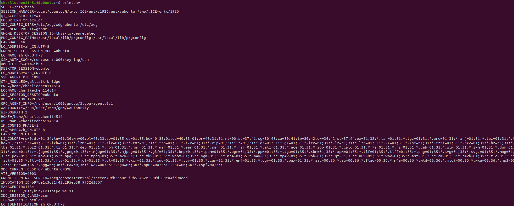
详细内容请参阅 env(1)手册。printenv 命令显示当前的环境列表，此处是其输出的一例：后续章节中将适时描述大多数上述环境变量的用途（也可参阅 environ(7)手册）。由以上输出可知，环境列表的排列是无序的，列表中的字符串顺序不过是最易于实现的排列形式。一般而言，无序的环境列表不是问题，因为通常都是访问单个的环境变量，而非环境列表中按序排列的一串。通过 Linux 专有的/proc/PID/environ 文件检查任一进程的环境列表，每一个“NAME=value”对都以空字节终止。
从程序中访问环境
在 C 语言程序中，可以使用全局变量 char **environ 访问环境列表。（C 运行时启动代码定义了该变量并以环境列表位置为其赋值。）environ 与 argv 参数类似，指向一个以 NULL 结尾的指针列表，每个指针又指向一个以空字节终止的字符串。图 6-5 所示为与上述 printenv 命令输出环境相对应的环境列表数据结构。
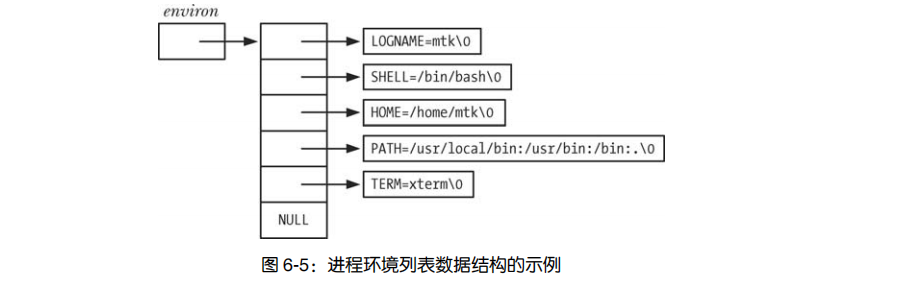
程序清单 6-3 中的程序通过访问 environ 变量来展示该进程环境中的所有值。该程序的输出结果与 printenv 命令的输出结果相同。程序中的循环利用指针来遍历 environ 变量。虽然可以把 environ 当成数组来使用（正如程序清单 6-2 中 argv 的用法），但这多少有些生硬，因为环境列表中各项的排列不分先后，而且也没有变量（相当于 argc）用来指定环境列表的长度。（出于同样原因，也没有对图 6-5 中的 environ 数组诸元素进行编号。）
程序清单 6-3：显示进程环境
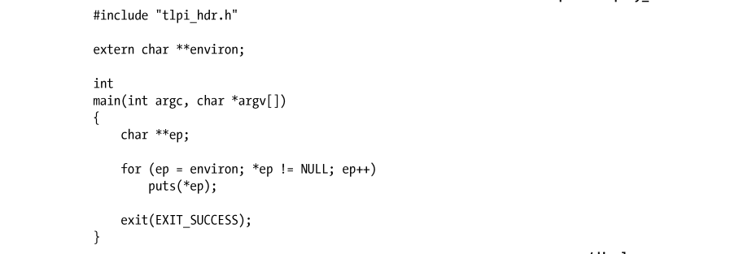
另外，还可以通过声明 main()函数中的第三个参数来访问环境列表：
该参数随即可被视为 environ 变量来使用，所不同的是，该参数的作用域在 main()函数内。虽然 UNIX 系统普遍实现了这一特性，但还是要避免使用，因为除了局限于作用域限制外，该特性也不在 SUSv3 的规范之列。
getenv()函数能够从进程环境中检索单个值。
向 getenv()函数提供环境变量名称，该函数将返回相应字符串指针。因此，就前面所示的环境（列表）示例来看，如果指定 SHELL 为参数 name，那么将返回/bin/bash。如果不存在指定名称的环境变量，那么 getenv()函数将返回 NULL。以下是使用 getenv()函数时可移植性方面的注意事项。
- SUSv3 规定应用程序不应修改 getenv()函数返回的字符串，这是由于（在大多数 UNIX实现中）该字符串实际上属于环境的一部分（即 name=value 字符串的 value 部分）。若需要改变一个环境变量的值，可以使用 setenv()函数或 putenv()函数（见下文）。
- SUSv3 允许 getenv()函数的实现使用静态分配的缓冲区返回执行结果，后续对 getenv()、setenv()、putenv()或者 unsetenv()的函数调用可以重写该缓冲区。虽然 glibc 库的 getenv()函数实现并未这样使用静态缓冲区，但具备可移植性的程序如需保留 getenv()调用返回的字符串，就应先将返回字符串复制到其他位置，之后方可对上述函数发起调用。
修改环境
有时，对进程来说，修改其环境很有用处。原因之一是这一修改对该进程后续创建的所有子进程均可见。另一个可能的原因在于设定某一变量，以求对于将要载入进程内存的新程序（“execed”）可见。从这个意义上讲，环境不仅是一种进程间通信的形式，还是程序间通信的方法。（第 27 章将深入描述这一点，还将解释在同一进程中 exec()函数如何使当前程序被一新程序所替代。）
putenv()函数向调用进程的环境中添加一个新变量，或者修改一个已经存在的变量值。
参数 string 是一指针，指向 name=value 形式的字符串。调用 putenv()函数后，该字符串就成为环境的一部分，换言之，putenv 函数将设定 environ 变量中某一元素的指向与 string 参数的指向位置相同，而非 string 参数所指向字符串的复制副本。因此，如果随后修改 string 参数所指的内容，这将影响该进程的环境。出于这一原因，string 参数不应为自动变量（即在栈中分配的字符数组1），因为定义此变量的函数一旦返回，就有可能会重写这块内存区域。注意，putenv()函数调用失败将返回非 0 值，而非−1。putenv()函数的 glibc 库实现还提供了一个非标准扩展。如果 string 参数内容不包含一个等号（=），那么将从环境列表中移除以 string 参数命名的环境变量。
setenv()函数可以代替 putenv()函数，向环境中添加一个变量。
setenv()函数为形如 name=value 的字符串分配一块内存缓冲区，并将 name 和 value 所指向的字符串复制到此缓冲区，以此来创建一个新的环境变量。注意，不需要（实际上，是绝对不要）在 name 的结尾处或者 value 的开始处提供一个等号字符，因为 setenv()函数会在向环境添加新变量时添加等号字符。若以 name 标识的变量在环境中已经存在，且参数 overwrite 的值为 0，则 setenv()函数将不改变环境，如果参数 overwrite 的值为非 0，则 setenv()函数总是改变环境。这一事实—setenv()函数复制其参数（到环境中）—意味着与 putenv()函数不同，之后对 name 和 value 所指字符串内容的修改将不会影响环境。此外，使用自动变量作为 setenv()函数的参数也不会有任何问题。unsetenv()函数从环境中移除由 name 参数标识的变量。
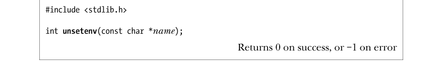
同 setenv()函数一样，参数 name 不应包含等号字符。setenv()函数和 unsetenv()函数均来自 BSD，不如 putenv()函数使用普遍。尽管起初的POSIX.1 标准和 SUSv2 并未定义这两个函数，但 SUSv3 已将其纳入规范。在 glibc 2.2.2 之前版本中，unsetenv()函数原型的返回值为 void 类型，这与最初的 BSD实现中 unsetenv 的函数原型相同，一些 UNIX 实现目前仍然沿用 BSD 原型。有时，需要清除整个环境，然后以所选值进行重建。例如，为了以安全方式执行 set-user-ID程序（38.8 节），就需要这样做。可以通过将 environ 变量赋值为 NULL 来清除环境。
这也正是 clearenv()库函数的工作内容。
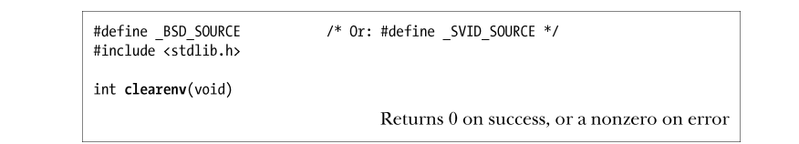
在某些情况下，使用 setenv()函数和 clearenv()函数可能会导致程序内存泄露。前面已然提及：setenv()函数所分配的一块内存缓冲区，随之会成为进程环境的一部分。而调用 clearenv()时则没有释放该缓冲区（clearenv()调用并不知晓该缓冲区的存在，故而也无法将其释放）。反复调用这两个函数的程序，会不断产生内存泄露。实际上，这不大可能成为一个问题，因为程序通常仅在启动时调用 clearenv()函数一次，用于移除继承自其父进程（即调用 exec()函数来启动当前程序的程序）环境中的所有条目。
许多 UNIX 实现都支持 clearenv()函数，但是 SUSv3 没有对此函数进行规范。SUSv3 规定如果应用程序直接修改 environ 变量，正如 clearenv()函数所做的那样，则不对 setenv()、unsetenv()和 getenv()的行为进行定义。（这一作法的根本原因在于禁止符合 SUSv3 标准的应用程序直接修改环境，意在使 UNIX 实现能完全控制其实现环境变量时所采用的数据结构。）SUSv3 允许应用程序清空自身环境的唯一方法是首先获取所有环境变量的列表（通过environ 变量获得所有环境变量的名称），然后逐一调用 unsetenv()移除每个环境变量。程序示例
程序清单 6-4 展示了本节讨论的所有函数的用法。该应用程序首先清空环境，然后向环境中逐一添加命令行参数所提供的环境变量定义；之后，如果环境中尚无名为 GREET 的变量，就向环境中添加该变量；接着，从环境中移除名为 BYE 的变量；最后打印当前环境列表。此处为该程序运行时输出结果的一例：
如果将 environ 参数赋值为 NULL（正如程序清单 6-4 中 clearenv()函数调用的所作所为），那么可以预见如下形式的循环（如程序清单 6-4 中使用的循环）将失败，因为*environ 是无效的。
然而，如果 setenv()函数和 putenv()函数发现 environ 参数为 NULL，则会创建一个新的环境列表，并使 environ 参数指向此列表，结果上面的循环操作又将正确运行。
程序清单 6-4：修改进程环境
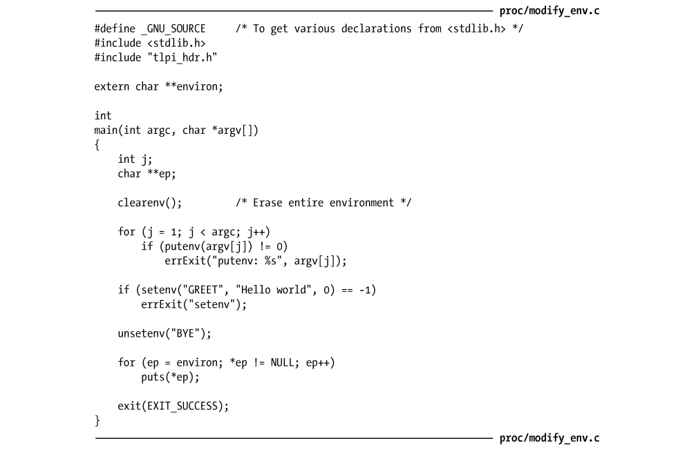
6.8 执行非局部跳转：setjmp()和 longjmp()
使用库函数 setjmp()和 longjmp()可执行非局部跳转（nonlocal goto）。术语“非局部（nonlocal）”是指跳转的目标为当前执行函数之外的某个位置。C 语言，像许多其他编程语言一样，包含 goto 语句。这就好比打开了潘多拉的魔盒。若无止境的滥用，将使程序难以阅读和维护。不过偶尔也能一显身手，令程序更简单、更快速，或是兼而有之。C 语言的 goto 语句存在一个限制，即不能从当前函数跳转到另一函数。然而，偶尔还是需要这一功能的。考虑错误处理中经常出现的如下场景：在一个深度嵌套的函数调用中发生了错误，需要放弃当前任务，从多层函数调用中返回，并在较高层级的函数中继续执行（也许甚至是在 main()中）。要做到这一点，可以让每个函数都返回一个状态值，由函数的调用者检查并做相应处理。这一方法完全有效，而且，在许多情况下，是处理这类场景的理想方法。然而，有时候如果能从嵌套函数调用中跳出，返回该函数的调用者之一（当前调用者或者调用者的调用者，等等），编码会更为简单。setjmp()和 longjmp()就提供了这一功能。
由于在 C 语言中，所有函数作用域的层级相同（即标准 C 语言不支持嵌套函数申明，尽管 gcc 将此功能作为其扩展功能），所以 goto 语句不能应用于函数间跳转。给定两个函数X 和 Y，编译器无从知晓当调用 Y 时，X 函数的栈帧是否在栈上，所以也无法判断从 Y 函数跳转（goto）到 X 函数是否可行。支持嵌套函数声明的语言，比如 Pascal 语言，允许 goto从一个嵌套函数跳转到其调用者，编译器得以根据函数的静态作用域来确定函数动态作用域的某些信息。因此，编译器若在词法解析时获悉函数 Y 嵌套于函数 X 之内1，也必然能够推断当调用 Y 时，X 函数的栈帧一定已然在栈中存在（即动态作用域），并能为函数 Y 产生 goto 代码，从 Y 中跳转到 X 函数的某处。 setjmp()调用为后续由 longjmp()调用执行的跳转确立了跳转目标。该目标正是程序发起setjmp()调用的位置。从编程角度看来，调用 longjmp()函数后，看起来就和从第二次调用 setjmp()返回时完全一样。通过查看 setjmp()返回的整数值，可以区分 setjmp 调用是初始返回还是第二次“返回”。初始调用返回值为 0，后续“伪”返回的返回值为 longjmp()调用中 val 参数所指定的任意值。通过对 val 参数使用不同值，能够区分出程序中跳转至同一目标的不同起跳位置。如果指定 longjmp()函数的 val 参数值为 0，而 longjmp 函数对此又不做检查，就会导致模拟 setjmp()时返回值为 0，如同初次调用 setjmp()函数返回时一样。出于这一原因，如果指定val 参数值为 0，则 longjmp()调用实际会将其替换为 1。
这两个函数的入参 env 为成功实现跳转提供了黏合剂。setjmp()函数把当前进程环境的各种信息保存到 env 参数中。调用 longjmp()时必须指定相同的 env 变量，以此来执行“伪”返回。由于对 setjmp()函数和 longjmp()函数的调用分别位于不同函数（否则，使用简单的 goto 即可），所以应该将 env 参数定义为全局变量，或者将 env 作为函数入参来传递，后一种做法较为少见。
调用 setjmp()时，env 除了存储当前进程的其他信息外，还保存了程序计数寄存器（指向当前正在执行的机器语言指令）和栈指针寄存器（标记栈顶）的副本。这些信息能够使后续的 longjmp()调用完成两个关键步骤的操作。
- 将发起 longjmp()调用的函数与之前调用 setjmp()的函数之间的函数栈帧从栈上剥离。有时又将此过程称为“解开栈（unwinding the stack）”，这是通过将栈指针寄存器重置为 env 参数内的保存值来实现的。
- 重置程序计数寄存器，使程序得以从初始的 setjmp()调用位置继续执行。同样，此功能是通过 env 参数中的保存值（程序计数寄存器）来实现的。
程序示例
程序清单 6-5 展示了 setjmp()和 longjmp()函数的用法。该程序通过 setjmp()的初始调用建立 了一个跳转目标，接下来的 switch（针对 setjmp()调用的返回值）用于检测是初次从 setjmp()调用返回还是在调用 longjmp()后返回。当 setjmp()调用返回值为 0 时，亦即对 setjmp()的初始调用完成后，将调用 f1()函数，f1()函数根据 argc 参数值（即命令行参数个数）来决定是立刻调用longjmp()函数还是继续去调用 f2()函数。如果是调用 f2()函数，则 f2()函数将马上调用 longjmp()函数。两处对 longjmp()的调用都会使进程恢复到调用 setjmp()的位置。程序在两处调用中为 val参数设定了不同值，以供 main()函数的 switch 语句区分发生跳转的函数，并打印相应信息。在不带任何命令行参数的情况下运行程序清单 6-5 中的程序，结果如下所示：
指定命令行参数，会使程序跳转发生在函数 f2()中：
程序清单 6-5：展示函数 setjmp()和 longjmp()的用法
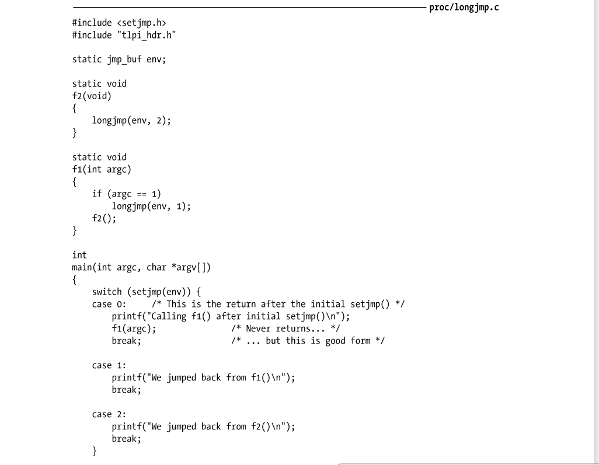
对 setjmp()函数的使用限制
SUSv3 和 C99 规定，对 setjmp()的调用只能在如下语境中使用。
- 构成选择或迭代语句中（if、switch、while 等）的整个控制表达式。
- 作为一元操作符!（not）的操作对象，其最终表达式构成了选择或迭代语句的整个控制表达式。
- 作为比较操作（==、!=、<等）的一部分，另一操作对象必须是一个整数常量表达式，且其最终表达式构成选择或迭代语句的整个控制表达式。
- 作为独立的函数调用，且没有嵌入到更大的表达式之中。
注意：C 语言赋值语句不在上述列表之列。
以下形式的语句是不符合标准的：
之所以规定这些限制，是因为作为常规函数的 setjmp()实现无法保证拥有足够信息来保存所有寄存器值和封闭表达式中用到的临时栈位置，以便于在 longjmp()调用后此类信息能得以正确恢复。因此，仅允许在足够简单且无需临时存储的表达式中调用 setjmp()。
滥用 longjmp()
如果将 env 缓冲区定义为全局变量，对所有函数可见（这也是通常用法），那么就可以执行如下操作序列。
1． 调用函数 x()，使用 setjmp()调用在全局变量 env 中建立一个跳转目标。
2． 从函数 x()中返回。
3． 调用函数 y()，使用 env 变量调用 longjmp()函数。
这是一个严重错误，因为 longjmp()调用不能跳转到一个已经返回的函数中。思考一下，在这种情况下，longjmp()函数会对栈打什么主意—尝试将栈解开，恢复到一个不存在的栈帧位置，这无疑将引起混乱。如果幸运的话，程序会一死（crash）了之。然而，取决于栈的状态，也可能会引起调用与返回间的死循环，而程序好像真地从一个当前并未执行的函数中返回了。（在多线程程序中有与之相类似的滥用，在线程某甲中调用 setjmp()函数，却在线程某乙中调用 longjmp()。）SUSv3 规定，如果从嵌套的信号处理器（signal handler）（即信号某甲的处理器正在运行时，又发起对信号某乙处理器的调用）中调用 longjmp()函数，则该程序的行为未定义。
优化编译器的问题
优化编译器会重组程序的指令执行顺序，并在 CPU 寄存器中，而非 RAM 中存储某些变量。这种优化一般依赖于反映了程序词法结构的运行时（run-time）控制流程。由于 setjmp()和 longjmp()的跳转操作需在运行时才能得以确立和执行，并未在程序的词法结构中有所反映，故而编译器在进行优化时也无法将其考虑在内。此外，某些应用程序二进制接口（ABI）实现的语义要求 longjmp()函数恢复先前 setjmp()调用所保存的 CPU 寄存器副本。这意味着 longjmp()操作会致使经过优化的变量被赋以错误值。程序清单 6-6 中的程序行为就是其中一例。
程序清单 6-6：编译器的优化和 longjmp()函数相互作用的示例
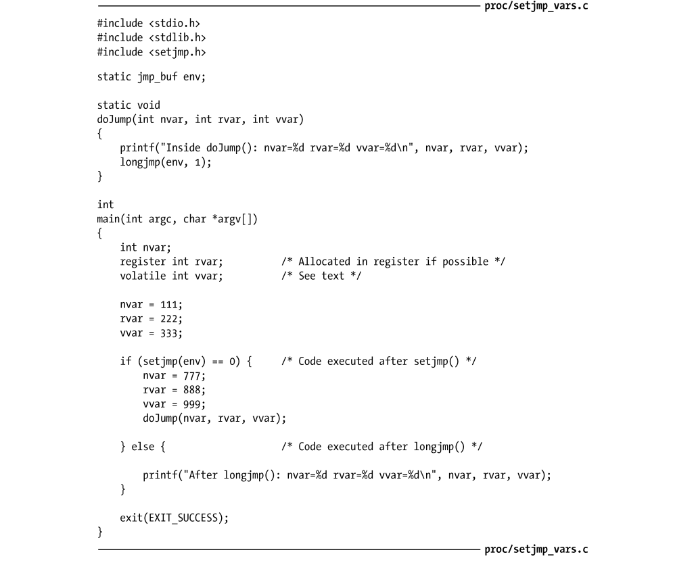
以常规方式编译程序清单 6-6 中的程序，输出结果符合预期。
然而，若以优化方式编译该程序，结果就有些出乎预料了。
此处，在 longjmp()调用后，nvar 和 rvar 参数被重置为 setjmp()初次调用时的值。起因是优化器对代码的重组受到 longjmp()调用的干扰。作为候选优化对象的任一局部变量可能都难免会遇到这类问题，一般包含指针变量和 char、int、float、long 等任何简单类型的变量。
将变量声明为 volatile，是告诉优化器不要对其进行优化，从而避免了代码重组。在上面的程序输出中，无论编译优化与否，声明为 volatile 的变量 vvar 都得到了正确处理。因为不同的优化器有着不同的优化方法，具备良好移植性的程序应在调用 setjmp()的函数中，将上述类型的所有局部变量都声明为 volatile。若在 GNU C 语言编译器中加入–Wextra（产生额外的警告信息）选项，setjmp_vars.c 程序的编译结果将显示有帮助的警告信息如下：
无论优化与否，查看编译 setjmp_vars.c 程序所产生的汇编语言输出都是有益的。cc –S命令产生一个以.s 为扩展名的文件，内容为程序的汇编代码。尽可能避免使用 setjmp()函数和 longjmp()函数如果说 goto 语句会使程序难以阅读，那么非局部跳转会让事情的糟糕程度增加一个数量级，因为它能在程序中任意两个函数间传递控制。因此，应当慎用 setjmp()函数和 longjmp()函数。在设计和编码时花点心思来避免使用这两个函数，这通常是值得的。程序更具可读性，可能会更具可移植性。话虽如此，但在编写信号处理器时，这些函数偶尔还会派上用场—讨论信号时将重新论及这些函数的变体（参见21.2.1节中的sigsetjmp()函数和siglongjmp()函数）。
6.9 总结
每个进程都有一个唯一进程标识号（process ID），并保存有对其父进程号的记录。进程的虚拟内存逻辑上被划分成许多段：文本段、（初始化和非初始化的）数据段、栈和堆。栈由一系列帧组成，随函数调用而增，随函数返回而减。每个帧都包含有函数局部变量、函数实参以及单个函数调用的调用链接信息。程序调用时，命令行参数通过 argc 和 argv 参数提供给 main()函数。通常，argv[0]包含调用程序的名称。每个进程都会获得其父进程环境列表的一个副本，即一组“名称-值”键值对。全局变量environ 和各种库函数允许进程访问和修改其环境列表中的变量。setjmp()函数和 longjmp()函数提供了从函数某甲执行非局部跳转到函数某乙（栈解开)的方法。在调用这些函数时，为避免编译器优化所引发的问题，应使用 volatile 修饰符声明变量。非局部跳转会使程序难于阅读和维护，应尽量避免使用。
内 存 分 配
7.1 在堆上分配内存
进程可以通过增加堆的大小来分配内存，所谓堆是一段长度可变的连续虚拟内存，始于进程的未初始化数据段末尾，随着内存的分配和释放而增减（见图 6-1）。通常将堆的当前内存边界称为“program break”。稍后将介绍 C 语言程序分配内存所惯用的 malloc 函数族，但首先还要从 malloc 函数族所基于的 brk()和 sbrk()开始谈起。
7.1.1 调整 program break：brk()和 sbrk()
改变堆的大小（即分配或释放内存），其实就像命令内核改变进程的 program break 位置一样简单。最初，program break 正好位于未初始化数据段末尾之后（如图 6-1 所示，与&end 位置相同）。在 program break 的位置抬升后，程序可以访问新分配区域内的任何内存地址，而此时物理内存页尚未分配。内核会在进程首次试图访问这些虚拟内存地址时自动分配新的物理内存页。传统的 UNIX 系统提供了两个操纵 program break 的系统调用：brk()和 sbrk()，在 Linux 中依然可用。虽然代码中很少直接使用这些系统调用，但了解它们有助于弄清内存分配的工作过程。
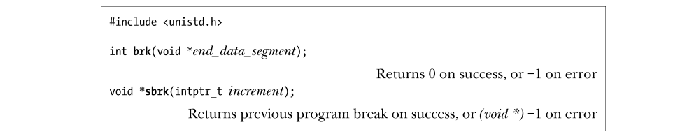
系统调用 brk()会将 program break 设置为参数 end_data_segment 所指定的位置。由于虚拟内存以页为单位进行分配，end_data_segment 实际会四舍五入到下一个内存页的边界处。当试图将 program break 设置为一个低于其初始值（即低于&end）的位置时，有可能会导致无法预知的行为，例如，当程序试图访问的数据位于初始化或未初始化数据段中当前尚不存在的部分时，就会引发分段内存访问错误（segmentation fault）（SIGSEGV 信号，在 20.2 节描述）。program break 可以设定的精确上限取决于一系列因素，这包括进程中对数据段大小的资源限制（36.3 节中描述的 RLIMIT_DATA），以及内存映射、共享内存段、共享库的位置。调用 sbrk()将 program break 在原有地址上增加从参数 increment 传入的大小。（在 Linux 中，sbrk()是在 brk()基础上实现的一个库函数。）用于声明 increment 的 intptr_t 类型属于整数数据类型。若调用成功，sbrk()返回前一个 program break 的地址。换言之，如果 program break 增加，那么返回值是指向这块新分配内存起始位置的指针。调用 sbrk(0)将返回 program break 的当前位置，对其不做改变。在意图跟踪堆的大小，或是监视内存分配函数包的行为时，可能会用到这一用法。SUSv2 定义了 brk()和 sbrk()，标记为 Legacy（传统）。但 SUSv3 删除了这些定义。
7.1.2 在堆上分配内存：malloc()和 free()
一般情况下，C 程序使用 malloc 函数族在堆上分配和释放内存。较之 brk()和 sbrk()，这些函数具备不少优点，如下所示。
- 属于 C 语言标准的一部分。
- 更易于在多线程程序中使用。
- 接口简单，允许分配小块内存。
- 允许随意释放内存块，它们被维护于一张空闲内存列表中，在后续内存分配调用时循环使用。
malloc( )函数在堆上分配参数 size 字节大小的内存，并返回指向新分配内存起始位置处的指针，其所分配的内存未经初始化。
由于 malloc()的返回类型为 void*，因而可以将其赋给任意类型的 C 指针。malloc()返回内存块所采用的字节对齐方式，总是适宜于高效访问任何类型的 C 语言数据结构。在大多数硬件架构上，这实际意味着 malloc 是基于 8 字节或 16 字节边界来分配内存的。1SUSv3 规定：调用 malloc(0)要么返回 NULL，要么是一小块可以（并且应该）用 free()释放的内存。Linux 的 malloc(0)行为遵循后者。若无法分配内存（或许是因为已经抵达 program break 所能达到的地址上限），则 malloc()返回 NULL，并设置 errno 以返回错误信息。虽然分配内存失败的可能性很小，但所有对 malloc()以及后续提及的相关函数的调用都应对返回值进行错误检查。free()函数释放 ptr 参数所指向的内存块，该参数应该是之前由 malloc()，或者本章后续描述的其他堆内存分配函数之一所返回的地址。一般情况下，free()并不降低 program break 的位置，而是将这块内存填加到空闲内存列表中，供后续的 malloc()函数循环使用。这么做是出于以下几个原因。
- 被释放的内存块通常会位于堆的中间，而非堆的顶部，因而降低 porgram break 是不可能的。
- 它最大限度地减少了程序必须执行的 sbrk()调用次数。（正如 3.1 节指出的，系统调用的开销虽小，却也颇为可观。）
- 在大多数情况下，降低 program break 的位置不会对那些分配大量内存的程序有多少帮助，因为它们通常倾向于持有已分配内存或是反复释放和重新分配内存，而非释放所有内存后再持续运行一段时间。
如果传给 free()的是一个空指针，那么函数将什么都不做。（换句话说，给 free()传入一个空指针并不是错误代码。）在调用 free()后对参数 ptr 的任何使用，例如将其再次传递给 free()，将产生错误，并可能导致不可预知的结果。
程序示例
程序清单 7-1 中的程序说明了 free()函数对 program break 的影响。该程序在分配了多块内存后，根据（可选）命令行参数来释放其中的部分或全部。前两个命令行参数指定了分配内存块的数量和大小。第三个命令行参数指定了释放内存块的循环步长。如果是 1（这也是省略此参数时的默认值），那么程序将释放每块已分配的内存，如果为 2，那么每隔一块释放一块已分配内存，以此类推。第四个和第五个命令行参数指定需要释放的内存块范围。如果省略这两个参数，那么将（以第三个命令行参数所指定的步长）释放全部范围内的已分配内存。程序清单 7-1：示范释放内存时 program break 的行为
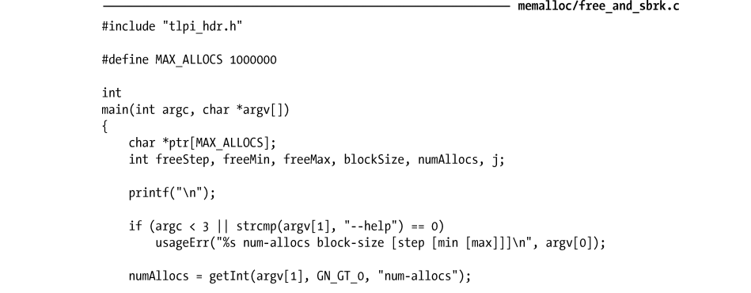
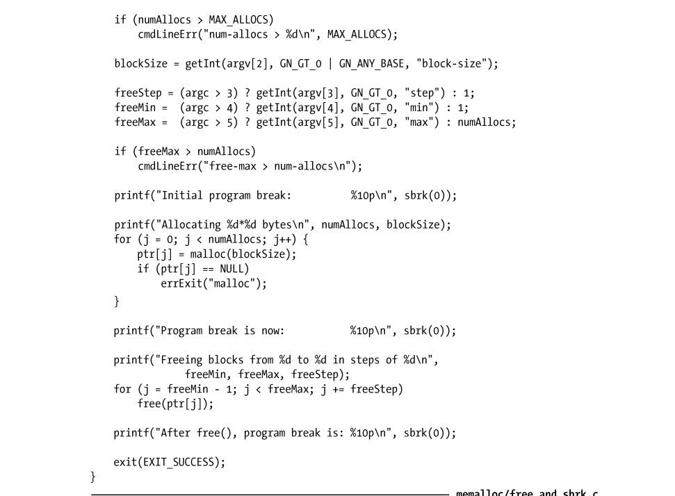
用下面的命令行运行程序清单 7-1 的程序，将会分配 1000 个内存块，且每隔一个内存块释放一个内存块。
./free_and_sbrk 1000 10240 2 输出结果显示，释放所有内存块后，program break 的位置仍然与分配所有内存块后的水平相当。
下面的命令行要求除了最后一块内存块，释放所有已分配的内存块。再一次，program break保持在了“高水位线”。
但是，如果在堆顶部释放完整的一组连续内存块，会观察到 program break 从峰值上降下来，这表明 free()使用了 sbrk()来降低 program break。在这里，命令行释放了已分配内存的最后 500 个内存块。
在这种情况下，free()函数的 glibc 实现会在释放内存时将相邻的空闲内存块合并为一整块更大的内存（这样做是为了避免在空闲内存列表中包含大量的小块内存碎片，这些碎片会因空间太小而难以满足后续的 malloc()请求），因而也有能力识别出堆顶部的整个空闲区域。仅当堆顶空闲内存“足够”大的时候，free()函数的 glibc 实现会调用 sbrk()来降低 program break 的地址，至于“足够”与否则取决于 malloc 函数包行为的控制参数（128 KB 为典型值）。这减少了必须对 sbrk()发起的调用次数（亦即对 brk()系统调用的调用次数）。
调用 free()还是不调用 free()
当进程终止时，其占用的所有内存都会返还给操作系统，这包括在堆内存中由 malloc 函数包内一系列函数所分配的内存。基于内存的这一自动释放机制，对于那些分配了内存并在进程终止前持续使用的程序而言，通常会省略对 free()的调用。这在程序中分配了多块内存的情况下可能会特别有用，因为加入多次对 free()的调用不但会消耗大量的 CPU 时间，而且可能会使代码趋于复杂。虽然依靠终止进程来自动释放内存对大多数程序来说是可以接受的，但基于以下几个原因，最好能够在程序中显式释放所有的已分配内存。y 显式调用 free()能使程序在未来修改时更具可读性和可维护性。y 如果使用 malloc 调试库（如下所述）来查找程序的内存泄漏问题，那么会将任何未经显式释放处理的内存报告为内存泄漏。这会使发现真正内存泄漏的工作复杂化。
7.1.3 malloc()和 free()的实现
尽管 malloc()和 free()所提供的内存分配接口比之 brk()和 sbrk()要容易许多，但在使用时仍然容易犯下各种编程错误。理解 malloc()和 free()的实现，将使我们洞悉产生这些错误的原因以及如何才能避免此类错误。malloc()的实现很简单。它首先会扫描之前由 free()所释放的空闲内存块列表，以求找到尺寸大于或等于要求的一块空闲内存。（取决于具体实现，采用的扫描策略会有所不同。例如，first-fit 或 best-fito。）如果这一内存块的尺寸正好与要求相当，就把它直接返回给调用者。如果是一块较大的内存，那么将对其进行分割，在将一块大小相当的内存返回给调用者的同时，把较小的那块空闲内存块保留在空闲列表中。如果在空闲内存列表中根本找不到足够大的空闲内存块，那么 malloc()会调用 sbrk()以分配更多的内存。为减少对 sbrk()的调用次数，malloc()并未只是严格按所需字节数来分配内存，而是以更大幅度（以虚拟内存页大小的数倍）来增加 program break，并将超出部分置于空闲内存列表。至于 free()函数的实现则更为有趣。当 free()将内存块置于空闲列表之上时，是如何知晓内存块大小的？这是通过一个小技巧来实现的。当 malloc()分配内存块时，会额外分配几个字节来存放记录这块内存大小的整数值。该整数位于内存块的起始处，而实际返回给调用者的内存地址恰好位于这一长度记录字节之后，如图 7-1 所示。
当将内存块置于空闲内存列表（双向链表）时，free()会使用内存块本身的空间来存放链表指针，将自身添加到列表中，如图 7-2 所示。
随着对内存不断地释放和重新分配，空闲列表中的空闲内存会和已分配的在用内存混杂在一起，如图 7-3 所示。图 7-3：包含有已分配内存和空闲内存列表的堆应该认识到，C 语言允许程序创建指向堆中任意位置的指针，并修改其指向的数据，包括由 free()和 malloc()函数维护的内存块长度、指向前一空闲块和后一空闲块的指针。辅之以之前的描述，一旦推究起隐晦难解的编程缺陷来，这无疑形同掉进了火药桶。例如，假设经由一个错误指针，程序无意间增加了冠于一块已分配内存的长度值，并随即释放这块内存，free()因之会在空闲列表中记录下这块长度失真的内存。随后，malloc()也许会重新分配这块内存，从而导致如下场景：程序的两个指针分别指向两块它认为互不相干的已分配内存，但实际上这两块内存却相互重叠。至于其他的出错情况则数不胜数。要避免这类错误，应该遵守以下规则。
- 分配一块内存后，应当小心谨慎，不要改变这块内存范围外的任何内容。错误的指针运算，或者循环更新内存块内容时出现的“off-by-one”（一字之偏）错误，都有可能导致这一情况。
- 释放同一块已分配内存超过一次是错误的。Linux 上的 glibc 库经常报出分段错误（SIGSEGV 信号）。这是好事，因为它提醒我们犯下了一个编程错误。然而，当两次释放同一块内存时，更常见的后果是导致不可预知的行为。
- 若非经由 malloc 函数包中函数所返回的指针，绝不能在调用 free()函数时使用。
- 在编写需要长时间运行的程序（例如，shell 或网络守护进程）时，出于各种目的，如果需要反复分配内存，那么应当确保释放所有已使用完毕的内存。如若不然，堆将稳步增长，直至抵达可用虚拟内存的上限，在此之后分配内存的任何尝试都将以失败告终。这种情况被称之为“内存泄漏”。
malloc 调试的工具和库
如果不遵循上述准则，可能会在代码中引入既难以理解又难以重现的缺陷。而使用 glibc提供的 malloc 调试工具或者任何一款 malloc 调试库，都会显著降低发现这些缺陷的难度，这也是设计它们的目的所在。以下是 glibc 提供的 malloc 调试工具的部分功能。
- mtrace()和 muntrace()函数分别在程序中打开和关闭对内存分配调用进行跟踪的功能。这些函数要与环境变量 MALLOC_TRACE 搭配使用，该变量定义了写入跟踪信息的文件名。在被调用时，mtrace()会检查是否定义了该文件，又是否可以打开文件并写入。如果一切正常，那么会在文件里跟踪和记录所有对 malloc 函数包中函数的调用。由于生成文件不易于理解，还提供有一个脚本（mtrace）用于分析文件，并生成易于理解的汇总报告。出于安全原因，设置用户 ID 和设置组 ID 的程序会忽略对 mtrace()的调用。
- mcheck()和 mprobe()函数允许程序对已分配内存块进行一致性检查。例如，当程序试图在已分配内存之外进行写操作时，它们将捕获这个错误。这些函数提供的功能和下述 malloc 调试库有重叠之处。使用这些函数的程序，必须使用 cc-lmcheck 选项与mcheck 库链接。
- MALLOC_CHECK_环境变量（注意结尾处的下划线）提供了类似于 mcheck()和mprobe()函数的功能。（两者之间的一个显著区别在于使用：MALLOC_CHECK_无需对程序进行修改和重新编译。）通过为此变量设置不同的整数值，可以控制程序对内存分配错误的响应方式。可能的设置有：0，意即忽略错误；1，意即在标准错误输出（stderr）中打印诊断错误；2，意即调用 abort()来终止程序。并非所有的内存分配和释放错误都是由 MALLOC_CHECK_检测出的，它所发现的只是常见错误。但是，这种技术快速、易用，较之于 malloc 调试库具有较低的运行时开销。出于安全原因，设置用户 ID 和设置组 ID 的程序将忽略 MALLOC_CHECK_设置。
关于以上所有功能更为详细的信息可以参考 glibc 手册。
而就 malloc 调试库而言，其提供了和标准 malloc 函数包相同的 API，但附加了捕获内存分配错误的功能。要使用调试库，需要在编译时链接调试库，而非标准 C 函数库的 malloc 函数包。由于调试库通常会降低运行速度，增加内存消耗，或是两者兼而有之，应当仅在调试时使用，而在正式发布产品时链接标准库的 malloc 包。这些库分别是：Electric Fence（http://www. perens.com/FreeSoftware/）、dmalloc（http://dmalloc.com/）、Valgrind（http://valgrind. org/）、Insure++（http://www.parasoft.com/）。Valgrind 和 Insure++能够发现许多堆内存分配之外的其他类型错误。可以访问其各自网站，以获取详细信息。
控制和监测 malloc 函数包
glibc 手册介绍了一系列非标准函数，可用于监测和控制 malloc 包中函数的内存分配，其中包括如下几个函数。
- 函数 mallopt()能修改各项参数，以控制 malloc()所采用的算法。例如，此类参数之一就指定了在调用 sbrk()函数进行堆收缩之前，在空闲列表尾部必须保有的可释放内存空间的最小值。另一参数则规定了从堆中分配的内存块大小的上限，超出上限的内存块则使用 mmap()系统调用（参见 49.7 节）来分配。
- mallinfo()函数返回一个结构，其中包含由 malloc()分配内存的各种统计数据。众多 UNIX 实现提供各种版本的 mallopt()和 mallinfo()。然而，这些函数所提供的接口却随实现而不同，因而也无法移植。
7.1.4 在堆上分配内存的其他方法
除了 malloc()，C 函数库还提供了一系列在堆上分配内存的其他函数，在这里将逐一介绍。
用 calloc()和 realloc()分配内存
函数 calloc()用于给一组相同对象分配内存。
参数 mumitems 指定分配对象的数量，size 指定每个对象的大小。在分配了适当大小的内存块后，calloc()返回指向这块内存起始处的指针（如果无法分配内存，则返回 NULL）。与 malloc()不同，calloc()会将已分配的内存初始化为 0。下面是 calloc()的一个使用范例：
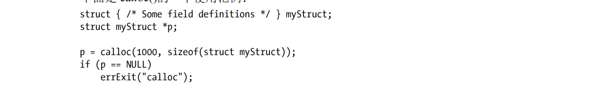
realloc()函数用来调整（通常是增加）一块内存的大小，而此块内存应是之前由 malloc 包中函数所分配的。参数 ptr 是指向需要调整大小的内存块的指针。参数 size 指定所需调整大小的期望值。如果成功，realloc()返回指向大小调整后内存块的指针。与调用前的指针相比，二者指向的位置可能不同。如果发生错误，realloc()返回 NULL，对 ptr 指针指向的内存块则原封不动（SUSv3 要求满足这一约定）。若 realloc()增加了已分配内存块的大小，则不会对额外分配的字节进行初始化。
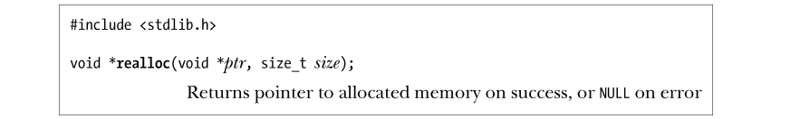
使用 calloc()或 realloc()分配的内存应使用 free()来释放。调用 realloc(ptr,0)等效于在 free(ptr)之后调用 malloc(0)。若 ptr 为 NULL，则 realloc(NULL, size)相当于调用 malloc(size)。通常情况下，当增大已分配内存时，realloc()会试图去合并在空闲列表中紧随其后1且大小满足要求的内存块。若原内存块位于堆的顶部，那么 realloc()将对堆空间进行扩展。如果这块内存位于堆的中部，且紧邻其后的空闲内存空间大小不足，realloc()会分配一块新内存，并将原有数据复制到新内存块中。最后这种情况最为常见，还会占用大量 CPU资源。一般情况下，应尽量避免调用 realloc()。既然 realloc()可能会移动内存，对这块内存的后续引用就必须使用 realloc()的返回指针。可以用 realloc()来重新定位由变量 ptr 指向的内存块，代码如下：
本例并没有把 realloc()的返回值直接赋给 ptr，因为一旦调用 realloc()失败，那么 ptr 会被置为 NULL，从而无法访问现有内存块。由于 realloc()可能会移动内存块，任何指向该内存块内部的指针在调用 realloc()之后都可能不再可用。仅有一种内存块内的位置引用方法依然有效，即以指向此块内存起始处的指针再加上一个偏移量来进行定位，这将在 48.6 节中详细讨论。
分配对齐的内存：memalign()和 posix_memalign()
设计函数 memalign()和 posix_memalign()的目的在于分配内存时，起始地址要与 2 的整数次幂边界对齐，该特征对于某些应用非常有用（例如程序清单 13-1）。\
函数 memalign()分配 size 个字节的内存，起始地址是参数 boundary 的整数倍，而 boundary必须是 2 的整数次幂。函数返回已分配内存的地址。函数 memalign()并非在所有 UNIX 实现上都存在。大多数提供 memalign()的其他 UNIX 实现都要求引用
函数 posix_memalign()与 memalign()存在以下两方面的不同。
- 已分配的内存地址通过参数 memptr 返回。
- 内存与 alignment 参数的整数倍对齐1，alignment 必须是 sizeof（void*）（在大多数硬件架构上是 4 或 8 个字节）与 2 的整数次幂两者间的乘积。
还要注意该函数与众不同的返回值，出错时不是返回−1，而是直接返回一个错误号（即通常在 errno 中返回的正整数）。
如果 SizeOf(void *)为 4，就可以使用 posix_memalign()分配 65536 字节的内存，并与 4096字节的边界对齐，代码如下：
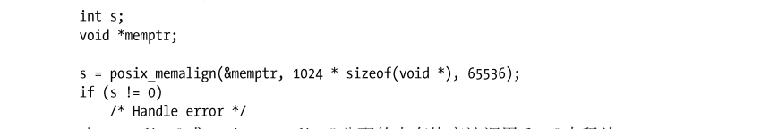
由 memalign()或 posix_memalign()分配的内存块应该调用 free()来释放。在一些 UNIX 实现中，无法通过调用 free()来释放由 memalign()分配的内存，因为此类memalign()在实现时使用 malloc()来分配内存块，然后返回一个指针，指向该块内已对齐的适当地址。glibc 的 memalign()则不受此限制。
7.2 在堆栈上分配内存：alloca()
和 malloc 函数包中的函数功能一样，alloca()也可以动态分配内存，不过不是从堆上分配内存，而是通过增加栈帧的大小从堆栈上分配。根据定义，当前调用函数的栈帧位于堆栈的顶部，故而这种方法是可行的。因此，帧的上方存在扩展空间，只需修改堆栈指针值即可。
#include <alloca.h>
void* alloca(size_t size); 参数 size 指定在堆栈上分配的字节数。函数 alloca()将指向已分配内存块的指针作为其返回值。不需要（实际上也绝不能）调用 free()来释放由 alloca()分配的内存。同样，也不可能调用realloc()来调整由 alloca()分配的内存大小。虽然 alloca()不是 SUSv3 的一部分，但大多数 UNIX 实现都提供了此函数，因而也具备可移植性。旧版本的 glibc 和其他一些 UNIX 实现（主要是 BSD 的衍生版本），要获取 alloca()声明需引入
func(x, alloca(size), z); 这会使 alloca()分配的堆栈空间出现在当前函数参数的空间内（函数参数都位于栈帧内的固定位置）。相反，必须采用这样的代码：
void* y = alloca(size);
func(x, y, z); 使用 alloca()来分配内存相对于 malloc()有一定优势。其中之一是，alloca()分配内存的速度要快于 malloc()，因为编译器将 alloca()作为内联代码处理，并通过直接调整堆栈指针来实现。此外，alloca()也不需要维护空闲内存块列表。另一个优点在于，由 alloca()分配的内存随栈帧的移除而自动释放，亦即当调用 alloca 的函数返回之时。之所以如此，是因为函数返回时所执行的代码会重置栈指针寄存器，使其指向前一帧的末尾（即，假设堆栈向下增长，则指向恰好位于当前栈帧起始处之上的地址）。由于在函数的所有返回路径中都无需确保去释放所有的已分配内存，一些函数的编码也变得简单得多。在信号处理程序中调用 longjmp()（6.8 节）或 siglongjmp()（21.2.1 节）以执行非局部跳转时，alloca()的作用尤其突出。此时，在“起跳”函数和“落地”函数之间的函数中，如果使用了 malloc()来分配内存，要想避免内存泄漏就极其困难，甚至是不可能的。与之相反，alloca()完全可以避免这一问题，因为堆栈是由这些调用展开的，所以已分配的内存会被自动释放